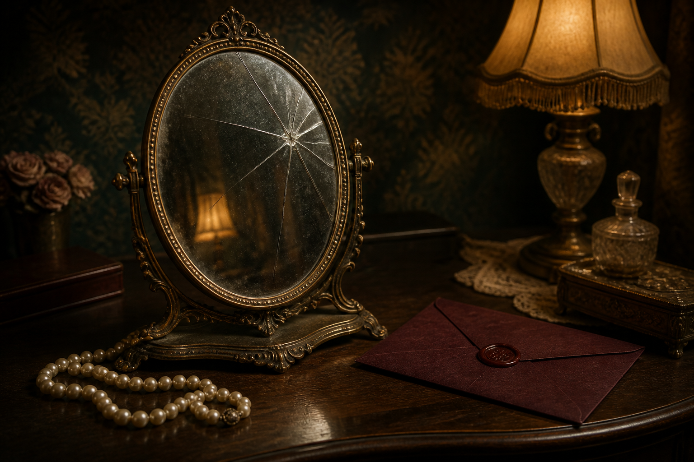
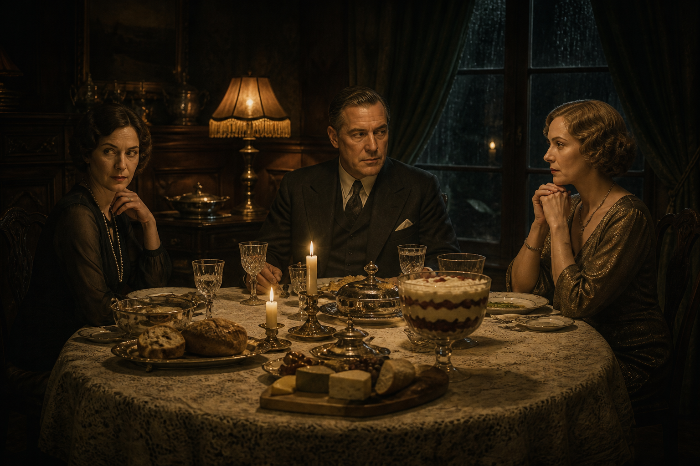

Case No. 02
Recommended

2–4 min.The Idol House of Astarte
Examine the crime scene and find the details hidden among ancient relics.
A private collection of investigations
Miss Marple investigates
Observe. Compare. Draw conclusions.
Every mystery has a story.
Three unsolved cases

15–20 min.Interactive investigation
Join the Tuesday Night Club, examine the circumstances of Mrs Jones’s death and uncover the method of poisoning.
Open the case →
2–4 min.Examine the crime scene and find the details hidden among ancient relics.
Decipher the secret message and discover where the shipment of gold disappeared.
The truth rarely lies on the surface.
But it always leaves a trace.
— From a private detective’s notebook